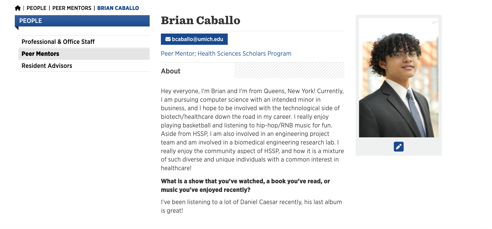
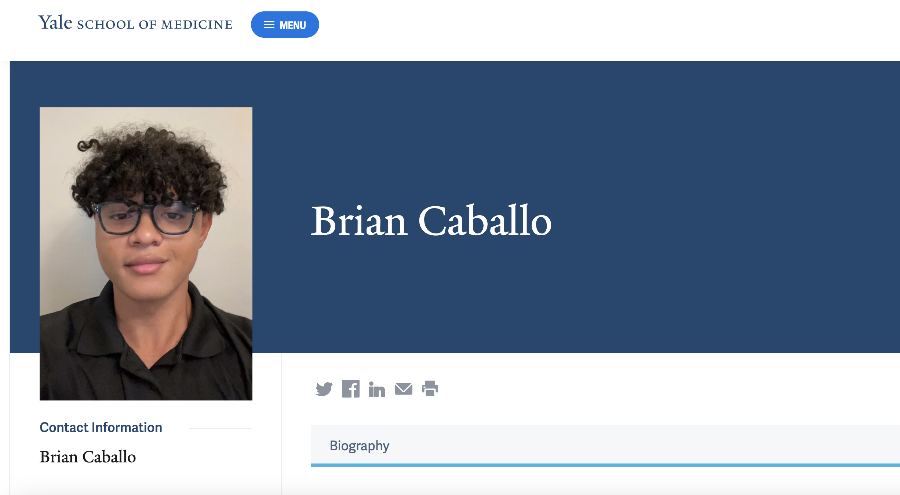
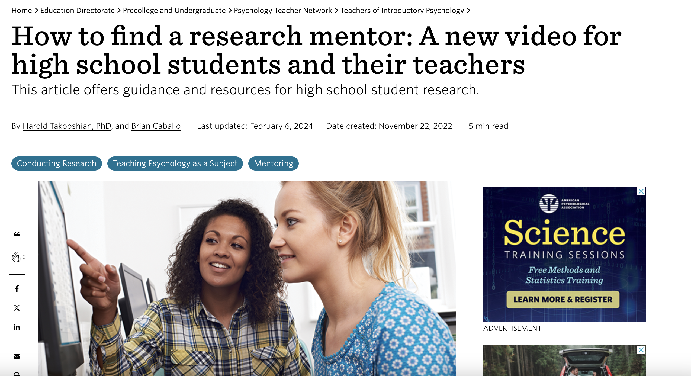

Company Experience

Integrated a data flow pipeline from MANTIS to PI System Explorer utilizing Python, SQL, and PI Web REST API to continuously clean and update preceding maintenance dates for dependent calculations
Automated client report generation and delivery utilizing Python scripting, REST API calls, and AWS to modernize programming functions and significantly reduce manual processing time.
Analyzed player behaviors and noted key aspects of gameplay experience utilizing reaction rating system for “Cards Against Humanity”, expansion packs, and other unreleased card games in testing phases
UMich Health Science Scholars Program Peer Mentor

Yale Center of Clinical Investigations Website

American Psychological Association Paper
